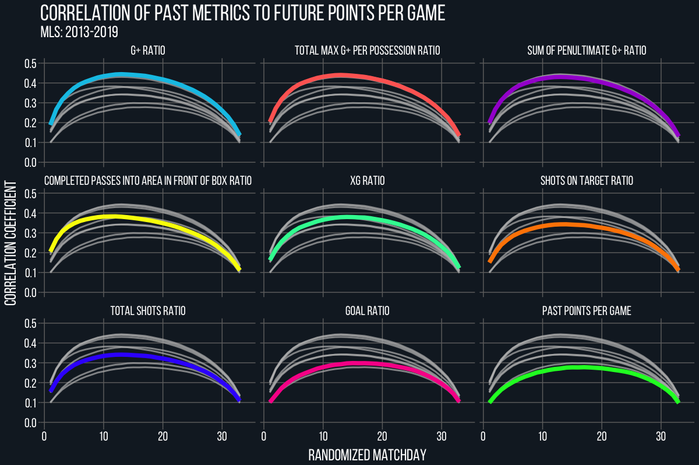
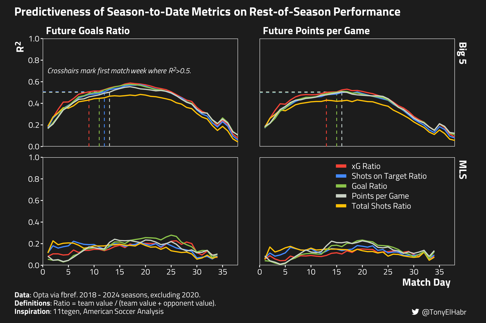
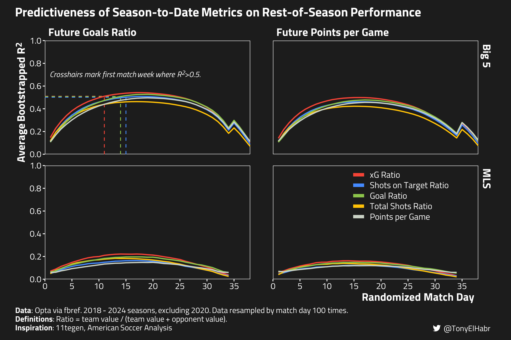
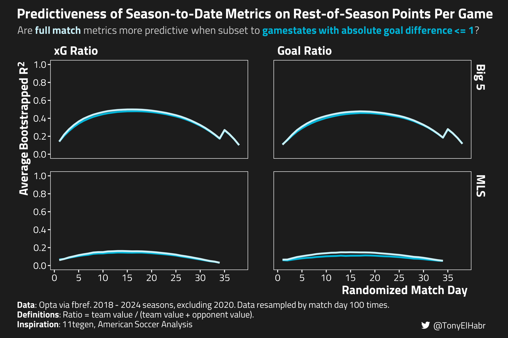
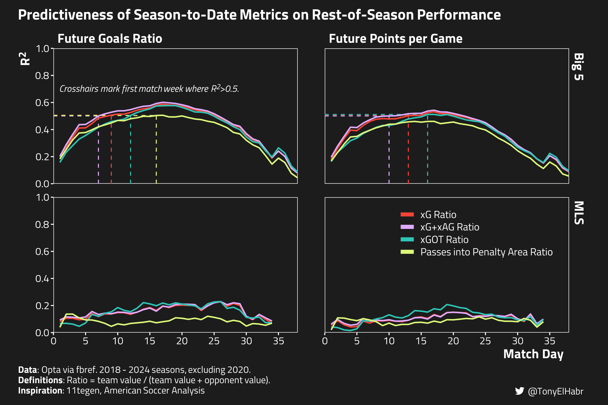
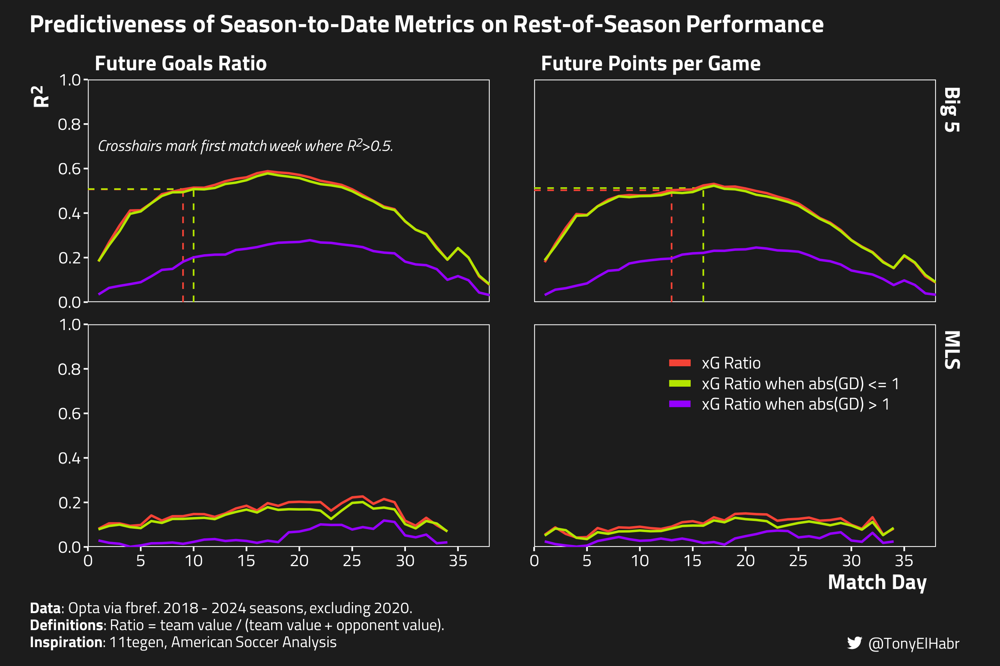

Is expected goals (xG) in neutral gamestates a better predictor of future performance than xG across all gamestates?
Author
Tony ElHabr
Published
June 19, 2024
Introduction
What is a ‘neutral’ gamestate?
The two most common definitions I’ve seen for “neutral” gamestate are periods of match time when
the score is tied, i.e. goal difference of 0
the absolute goal difference (GD) is 0 or 1
I investigate both.
tldr: The answer to the header question
The answer to the question is “no”–expected goals (xG) subset to neutral gamestates does not end up being a better predictor of future performance than overall xG. Nonetheless, I do find that there is barely any reduction in the predictiveness in xG when using the latter definition of “neutral” gamestate (absolute GD <= 1). This itself is an interesting finding, as it indirectly validates the common notion that xG accumulated in lopsided gamestates (e.g. 2-0, 1-4) adds litle value in terms of forecasting rest-of-season performance.
“The best predictor for future performance is Expected Goals”, authored by Sander Ijtsma of 11tegen11 in 2015, is one of the most influential pieces of writing in the public soccer analytics sphere. The write-up provided compelling evidence for the superiority of expected goals (xG) in terms of forecasting team-season outcomes on a game-by-game basis.12 Ijtsma drew out curves for running \(R^2\) values of a handful of season-to-date (“past”) metrics with respect to rest-of-season (“future”) performance indicators–goals ratio and points per game–and found that xG ratio3 tended to be the most predictive.
I expand the data set range to 2018 through 2024, sourcing from a reputed public data source–FBref.4 The intention is to make the analysis even more robust and reproducible.
I include additional curves for “gamestate-aware” goals and xG, in an effort to see if one can achieve metrics that are perhaps even more predictive than xG itself.
On the second point, Ijtsma noted that subsetting the past performance tallies to gamestates when the score is either tied or within 1 goal might abate the potential biases introduced by within-match complacency (manifesting in conservative tactics). In fact, he said he had evaluated these things.
I’ve looked at this, but I have decided not to include that subanalysis in this post, for the sake of accessibility… I think this method will show that the phenomenon [where teams exert more or less effort in matches against particular opposition] either does not truly exist, or that its effect is so small that correcting for this will allow more noise and thereby weaken the model.
Unfortunately, I couldn’t find any subsequent blog post where Ijtsma writes about the role of gamestate in the context of his \(R^2\) analysis, so, alas, I’m here to do exactly that.
Now, my point isn’t necessarily to find the absolute best metric possible to use to forecast future team performance. Tiotal Football (with assistance from Eliot) showed that comprehensive event-based metrics like goals added (light blue), completed passes into the area in front of the box (yellow), etc. are even more predictive of future points per game than xG, at least in the MLS.

I do look at a few metrics that go beyond Ijtsma’s set in the Appendix, but that is not the primary focus of this post.
Data
I use {worldfootballR} to retrieve match-level figures and shot logs from FBref. As noted in the intro, we’re going to be working with Big 5 and MLS data for the 2018 - 2024 (season-ending) seasons.
Code Setup
## data ingestionlibrary(worldfootballR)library(dplyr)library(stringr)library(tidyr)## plottinglibrary(ggplot2)library(sysfonts)library(showtext)library(ggtext)library(htmltools)## local devlibrary(withr)library(qs)## parallelization for bootstrap calcslibrary(parallel)library(future)library(furrr)PROJ_DIR <-'posts/xg-predictor-future-results'## Extract the from "47880eb7" from "https://fbref.com/en/matches/47880eb7/Liverpool-Manchester-City-November-10-2019-Premier-League"extract_fbref_match_id <-function(match_url) {basename(dirname(match_url))}
Data Setup
## Discrepancies in worldfootballR's saved datafix_team <-function(x) { dplyr::case_match( x,'Montreal Impact'~'CF Montréal','Sporting Kansas City'~'Sporting KC',.default = x )}COUNTRY <-c('ENG', 'ESP', 'FRA', 'GER', 'ITA', 'USA')GENDER <-'M'TIER <-'1st'SEASON_END_YEAR <-c(2018:2024)## for match-level shot dataraw_team_summary <- worldfootballR::load_fb_advanced_match_stats(country = COUNTRY,gender = GENDER,tier = TIER,season_end_year = SEASON_END_YEAR,stat_type ='summary',team_or_player ='team')#> → Data last updated 2024-05-21 18:39:59 UTCraw_team_passing <- worldfootballR::load_fb_advanced_match_stats(country = COUNTRY,gender = GENDER,tier = TIER,season_end_year = SEASON_END_YEAR,stat_type ='passing',team_or_player ='team')#> → Data last updated 2024-05-21 18:39:59 UTC## for shot-level data for gamestate calcsraw_shots <- worldfootballR::load_fb_match_shooting(country = COUNTRY,gender = GENDER,tier = TIER,season_end_year = SEASON_END_YEAR)#> → Data last updated 2024-05-21 17:52:12 UTC## for team info for gamestate calcsraw_match_summaries <- worldfootballR::load_fb_match_summary(country = COUNTRY,gender = GENDER,tier = TIER,season_end_year = SEASON_END_YEAR)#> → Data last updated 2024-05-21 18:14:02 UTC
Match-level data ingestion
## Known/valid matches with missing xG## - https://fbref.com/en/matches/e0a20cfe/Hellas-Verona-Roma-September-19-2020-Serie-A: awarded to Hellas Verona## https://fbref.com/en/matches/c34bbc21/Bochum-Monchengladbach-March-18-2022-Bundesliga: awarded to Monchengladbachdrop_bad_matches <-function(df) { df |> dplyr::filter(## choose non-playoff/relegation weeks (Country !='USA'& stringr::str_detect(Matchweek, 'Matchweek')) | (Country =='USA'& Matchweek =='Major League Soccer (Regular Season)') ) |>## Fix effectively dup records due to change in MatchURLs dplyr::filter(!(Country =='GER'& Season_End_Year ==2024& stringr::str_detect(MatchURL, 'Leverkusen') &!stringr::str_detect(MatchURL, 'Bayer-Leverkusen'))) |>## Drop MLS 2024 since it's incomplete at time of writing dplyr::filter(!(Country =='USA'& Season_End_Year ==2024) ) |>## Drop COVID-19-affected seasonf for all leagues## (Ligue 1 is espeically odd, as each team has about 7 games missing.) dplyr::filter( Season_End_Year !=2020 )}team_summary <- raw_team_summary |>drop_bad_matches() |> dplyr::transmute(season = Season_End_Year,country = Country,gender = Gender,tier = Tier,# match_week = stringr::str_extract(Matchweek, '[0-9]+') |> as.integer(), ## won't works for MLS## We'll use this to define our own notion of match week, where we order games## by date rather than use the FBref matchweek provided at face value, since a## a match could have been rescheduled, leading to situations where the labeled## matchweek 2 comes before the matchweek 1, for example.date = Match_Date, match_id =extract_fbref_match_id(MatchURL),team = Team,is_home = Home_Away =='Home',g = Gls,xg = xG_Expected,shots = Sh,sot = SoT ) |>## passing metrics for further exploration dplyr::left_join( raw_team_passing |>drop_bad_matches() |> dplyr::transmute(match_id =extract_fbref_match_id(MatchURL),team = Team,ppa = PPA,xag = xAG ),by = dplyr::join_by(match_id, team) ) |> dplyr::mutate(xg_xag = dplyr::coalesce(xg, 0) + dplyr::coalesce(xag, 0) ) |> dplyr::group_by(season, team) |> dplyr::mutate(season_game_count = dplyr::n(),game_idx = dplyr::row_number(date) ) |> dplyr::ungroup()combined_team_summary <- dplyr::left_join( team_summary, team_summary |> dplyr::rename_with( \(.x) paste0(.x, '_conceded'),c( g, xg, shots, sot, ppa, xag, xg_xag ) ) |> dplyr::select( match_id,opponent = team, dplyr::ends_with('conceded') ),by = dplyr::join_by(match_id),relationship ='many-to-many') |> dplyr::filter(team != opponent) |> dplyr::mutate(pts = dplyr::case_when( g > g_conceded ~3L, g < g_conceded ~0L, g == g_conceded ~1L ),pts_conceded = dplyr::case_when( g > g_conceded ~0L, g < g_conceded ~3L, g == g_conceded ~1L ) ) |> dplyr::arrange(team, season, date)dplyr::glimpse(combined_team_summary)#> Rows: 25,416#> Columns: 27#> $ season <int> 2023, 2023, 2023, 2023, 2023, 2023, 2023, 2023, 2…#> $ country <chr> "FRA", "FRA", "FRA", "FRA", "FRA", "FRA", "FRA", …#> $ gender <chr> "M", "M", "M", "M", "M", "M", "M", "M", "M", "M",…#> $ tier <chr> "1st", "1st", "1st", "1st", "1st", "1st", "1st", …#> $ date <chr> "2022-08-05", "2022-08-14", "2022-08-21", "2022-0…#> $ match_id <chr> "47ab569b", "8b559e8f", "9befca9a", "d8aa49d4", "…#> $ team <chr> "Ajaccio", "Ajaccio", "Ajaccio", "Ajaccio", "Ajac…#> $ is_home <lgl> FALSE, TRUE, FALSE, TRUE, FALSE, TRUE, TRUE, FALS…#> $ g <dbl> 1, 0, 1, 1, 0, 0, 0, 1, 1, 1, 1, 0, 0, 4, 2, 1, 0…#> $ xg <dbl> 1.5, 0.5, 1.4, 1.7, 1.2, 0.5, 1.2, 0.5, 1.5, 0.2,…#> $ shots <dbl> 7, 9, 9, 14, 15, 16, 9, 6, 12, 6, 14, 8, 5, 9, 12…#> $ sot <dbl> 3, 2, 2, 2, 0, 3, 3, 4, 3, 1, 6, 1, 1, 5, 3, 2, 0…#> $ ppa <dbl> 6, 4, 3, 5, 7, 11, 9, 4, 5, 2, 8, 3, 5, 8, 6, 7, …#> $ xag <dbl> 0.4, 0.3, 0.6, 0.7, 0.7, 0.4, 1.2, 0.4, 0.7, 0.1,…#> $ xg_xag <dbl> 1.9, 0.8, 2.0, 2.4, 1.9, 0.9, 2.4, 0.9, 2.2, 0.3,…#> $ season_game_count <int> 38, 38, 38, 38, 38, 38, 38, 38, 38, 38, 38, 38, 3…#> $ game_idx <int> 1, 2, 3, 4, 5, 6, 7, 8, 9, 10, 11, 12, 13, 14, 15…#> $ opponent <chr> "Lyon", "Lens", "Rennes", "Lille", "Montpellier",…#> $ g_conceded <dbl> 2, 0, 2, 3, 2, 1, 1, 0, 3, 1, 1, 3, 1, 2, 2, 0, 2…#> $ xg_conceded <dbl> 1.3, 1.4, 1.2, 1.7, 1.7, 0.8, 1.3, 0.5, 1.0, 1.8,…#> $ shots_conceded <dbl> 10, 12, 16, 6, 9, 7, 12, 8, 7, 9, 9, 11, 18, 9, 1…#> $ sot_conceded <dbl> 5, 3, 7, 4, 4, 4, 3, 4, 3, 1, 2, 6, 5, 5, 5, 4, 4…#> $ ppa_conceded <dbl> 7, 13, 5, 7, 5, 3, 5, 7, 6, 12, 7, 16, 3, 7, 5, 9…#> $ xag_conceded <dbl> 0.5, 1.2, 0.8, 0.7, 1.7, 0.7, 1.1, 0.3, 1.0, 0.8,…#> $ xg_xag_conceded <dbl> 1.8, 2.6, 2.0, 2.4, 3.4, 1.5, 2.4, 0.8, 2.0, 2.6,…#> $ pts <int> 0, 1, 0, 0, 0, 0, 0, 3, 0, 1, 1, 0, 0, 3, 1, 3, 0…#> $ pts_conceded <int> 3, 1, 3, 3, 3, 3, 3, 0, 3, 1, 1, 3, 3, 0, 1, 0, 3…
Let’s begin with replicating Ijtsma’s visualization where he evaluated the running \(R^2\) of the five measures of past performance with respect to two measures of future performance. The five measures of past performance are:
points per game
goal ratio
total shots ratio
shots on target ratio
xG ratio
The two measures of future performance are:
goals ratio
points per game
Calculate rolling \(R^2\) for season-to-date and rest-of-season performance measures
TAG_LABEL <- htmltools::tagList( htmltools::tags$span(htmltools::HTML(enc2utf8("")), style ='font-family:fb'), htmltools::tags$span("@TonyElHabr"),)CAPTION_LABEL <-'**Data**: Opta via fbref. 2018 - 2024 seasons, excluding 2020.<br/>**Definitions**: Ratio = team value / (team value + opponent value).<br/>**Inspiration**: 11tegen, American Soccer Analysis'PLOT_RESOLUTION <-300WHITISH_FOREGROUND_COLOR <-'white'COMPLEMENTARY_FOREGROUND_COLOR <-'#cbcbcb'# '#f1f1f1'BLACKISH_BACKGROUND_COLOR <-'#1c1c1c'COMPLEMENTARY_BACKGROUND_COLOR <-'#4d4d4d'FONT <-'Titillium Web'sysfonts::font_add_google(FONT, FONT)## https://github.com/tashapiro/tanya-data-viz/blob/main/chatgpt-lensa/chatgpt-lensa.R for twitter logosysfonts::font_add('fb', 'Font Awesome 6 Brands-Regular-400.otf')showtext::showtext_auto()showtext::showtext_opts(dpi = PLOT_RESOLUTION)ggplot2::theme_set(ggplot2::theme_minimal())ggplot2::theme_update(text = ggplot2::element_text(family = FONT),title = ggplot2::element_text(size =16, color = WHITISH_FOREGROUND_COLOR),plot.title = ggtext::element_markdown(face ='bold', size =16, color = WHITISH_FOREGROUND_COLOR),plot.title.position ='plot',plot.subtitle = ggtext::element_markdown(size =16, color = COMPLEMENTARY_FOREGROUND_COLOR),axis.text = ggplot2::element_text(color = WHITISH_FOREGROUND_COLOR, size =11),legend.text = ggplot2::element_text(size =12, color = WHITISH_FOREGROUND_COLOR, face ='plain'),legend.title = ggplot2::element_text(size =12, color = WHITISH_FOREGROUND_COLOR, face ='bold'),axis.title.x = ggtext::element_markdown(size =14, color = WHITISH_FOREGROUND_COLOR, face ='bold', hjust =0.99),axis.title.y = ggtext::element_markdown(size =14, color = WHITISH_FOREGROUND_COLOR, face ='bold', hjust =0.99),axis.ticks = ggplot2::element_line(color = WHITISH_FOREGROUND_COLOR),axis.line = ggplot2::element_blank(),strip.text = ggplot2::element_text(size =14, color = WHITISH_FOREGROUND_COLOR, face ='bold', hjust =0),panel.grid.major = ggplot2::element_line(color = COMPLEMENTARY_BACKGROUND_COLOR),panel.grid.minor = ggplot2::element_line(color = COMPLEMENTARY_BACKGROUND_COLOR),panel.grid.minor.x = ggplot2::element_blank(),panel.grid.minor.y = ggplot2::element_blank(),plot.margin = ggplot2::margin(10, 20, 10, 20),plot.background = ggplot2::element_rect(fill = BLACKISH_BACKGROUND_COLOR, color = BLACKISH_BACKGROUND_COLOR),plot.caption = ggtext::element_markdown(color = WHITISH_FOREGROUND_COLOR, hjust =0, size =10, face ='plain', lineheight =1.1),plot.caption.position ='plot',plot.tag = ggtext::element_markdown(size =10, color = WHITISH_FOREGROUND_COLOR, hjust =1),plot.tag.position =c(0.99, 0.01),panel.spacing.x = grid::unit(2, 'lines'),panel.spacing.y = grid::unit(1, 'lines'),# panel.background = ggplot2::element_rect(fill = BLACKISH_BACKGROUND_COLOR, color = BLACKISH_BACKGROUND_COLOR)panel.background = ggplot2::element_rect(fill = BLACKISH_BACKGROUND_COLOR, color = WHITISH_FOREGROUND_COLOR))BASE_PRETTY_PREDICTOR_NAMES <-c('past_ppg'='Points per Game','past_g_ratio'='Goal Ratio','past_shot_ratio'='Total Shots Ratio','past_sot_ratio'='Shots on Target Ratio','past_xg_ratio'='xG Ratio')PRETTY_TARGET_NAMES <-c('future_ppg'='Future Points per Game','future_g_ratio'='Future Goals Ratio')XG_RATIO_COLOR <-'#f44336'BASE_PREDICTOR_PALETTE <-c('Points per Game'='#cad2c5','Goal Ratio'='#8bc34a','Total Shots Ratio'='#ffc107','Shots on Target Ratio'='#448aff','xG Ratio'= XG_RATIO_COLOR)CROSSHAIR_LABEL <-'<i>Crosshairs mark first match week where R<sup>2</sup>>0.5.</i>'plotting_rolling_r2s <-function(rolling_r2s, pretty_predictor_names, predictor_palette) { prettified_rolling_r2s <- rolling_r2s |> dplyr::filter( predictor %in%names(pretty_predictor_names) ) |> dplyr::mutate(pretty_predictor =factor(pretty_predictor_names[predictor], rev(pretty_predictor_names)),pretty_target = PRETTY_TARGET_NAMES[target] ) |>## put xG on top dplyr::arrange(league_group, pretty_target, dplyr::desc(pretty_predictor)) min_prettified_rolling_r2s <- prettified_rolling_r2s |> dplyr::filter(r2 >0.5) |> dplyr::group_by(league_group, pretty_target, pretty_predictor) |> dplyr::slice_min(game_idx, n =1) |> dplyr::ungroup() prettified_rolling_r2s |> ggplot2::ggplot() + ggplot2::aes(x = game_idx,y = r2 ) + ggplot2::geom_segment(data = min_prettified_rolling_r2s, ggplot2::aes(color = pretty_predictor,x =0,xend = game_idx,y = r2,yend = r2 ),linetype =2,linewidth =0.5 ) + ggplot2::geom_segment(data = min_prettified_rolling_r2s, ggplot2::aes(color = pretty_predictor,x = game_idx,xend = game_idx,y =0,yend = r2 ),linetype =2,linewidth =0.5 ) + ggplot2::geom_line(linewidth =0.75, ggplot2::aes(color = pretty_predictor) ) + ggplot2::scale_color_manual(values = predictor_palette ) + ggplot2::guides(color = ggplot2::guide_legend(title =NULL,position ='inside',label.theme = ggplot2::element_text(color = WHITISH_FOREGROUND_COLOR, size =11, FONT),override.aes =list(linewidth =2) ) ) + ggplot2::scale_y_continuous(expand =c(0, 0),limits =c(0, 1),breaks =seq(0, 1, by =0.2),labels = scales::number_format(accuracy =0.1) ) + ggplot2::scale_x_continuous(expand =c(0, 0),limits =c(0, 38),breaks =seq.int(0, 35, by =5),labels =seq.int(0, 35, by =5) ) + ggtext::geom_richtext(data = tibble::tibble(league_group ='Big 5',pretty_target =sort(unname(PRETTY_TARGET_NAMES))[1] ), ggplot2::aes(x =1,y =0.7,label = CROSSHAIR_LABEL ),fill =NA, label.color =NA,label.padding = grid::unit(rep(0, 4), 'pt'),color = WHITISH_FOREGROUND_COLOR,family = FONT,size =10/ .pt,hjust =0,vjust =0.5 ) + ggplot2::theme(legend.position.inside =c(0.82, 0.35),legend.key.spacing.y = ggplot2::unit(-4, 'pt'),panel.grid.major = ggplot2::element_blank() ) + ggplot2::facet_grid(league_group~pretty_target) + ggplot2::labs(title ='Predictiveness of Season-to-Date Metrics on Rest-of-Season Performance',x ='Match Day',y ='R<sup>2</sup>',caption = CAPTION_LABEL,tag = TAG_LABEL )}## Can pick either rolling_r2s_gd0 or rolling_r2s_abs_gd1 to plot since we're looking at just## non-gamestate features hererolling_r2s_plot <- rolling_r2s_abs_gd1 |>plotting_rolling_r2s(pretty_predictor_names = BASE_PRETTY_PREDICTOR_NAMES, predictor_palette = BASE_PREDICTOR_PALETTE )ggplot2::ggsave( rolling_r2s_plot,filename =file.path(PROJ_DIR, 'rolling-r2s.png'),width =9,height =9/1.5)

There’s a bit of visual noise here that can make it hard to differentiate traces. This can be smoothed out by resampling.
Specifically, if we randomly reorder matchweeks before calculating cumulative in-season measures, and do that 100 times, we end up with a plot that looks like this.
BOOTSTRAPPED_CAPTION_LABEL <- stringr::str_replace( CAPTION_LABEL, '<br\\/>', glue::glue(' Data resampled by match day {N_RESAMPLES} times.<br/>'))relabel_for_bootstrap_plot <-function(...) {list( ..., ggplot2::labs(y ='Average Bootstrapped R<sup>2</sup>',caption = BOOTSTRAPPED_CAPTION_LABEL,x ='Randomized Match Day' ) )}resampled_rolling_r2s_plot <- resampled_rolling_r2s_gd0 |>plotting_rolling_r2s(pretty_predictor_names = BASE_PRETTY_PREDICTOR_NAMES, predictor_palette = BASE_PREDICTOR_PALETTE ) +relabel_for_bootstrap_plot()ggplot2::ggsave( resampled_rolling_r2s_plot,filename =file.path(PROJ_DIR, 'bootstrapped-rolling-r2s.png'),width =9,height =9/1.5)

Indeed, this looks like the bootstrapped plot from ASA.5 Note that,
Effect of bootstrapping
For a given metric, the bootstrapped \(R^2\) values are slightly smaller across the board compared to the non-bootstrapped values.6 This is perhaps not surprising, as resampling tends to have a “shrinking” effect on figures. Intuitively, this noise could be associated with scheduling bias, injuries, etc.
Extending prior art
Now we incorporate gamestate-aware measures.7 In this case, we’re mostly interested game time where the score is close.
A “close” match can be strictly defined as one with a tied score, whether it’s 0-0, 1-1, etc. The indirect assumption is that teams start to play more conservatively (if at all) when leading, thereby distorting the ratio of shots, goals, and xG that we might otherwise expect given the relative quality of the teams. By excluding events when the game is not tied, we might achieve more “signal” in our measures of performance.
We might also define “close” as periods when the absolute difference in goals is 0 or 1, so 0-1, 1-2, 3-2, 5-4, etc. in addition to 0-0, 1-1, etc. This definition indirectly assumes that teams don’t start to play more complacently (if at all) when ahead until they have a 2 goal lead. This approach would capture more game time (and have higher tallies of goals, shots, etc.) compared to the gd = 0 approach, although less time than just using the whole match.
In the plot below, I’ve split out each the xG and goals measures of past performance into their own facets, paired with tied gamestate analogue (in a brighter blue shade). Note that I’m showing just points per game as the sole measure of future performance.8
Plotting the bootstrapped \(R^2\) values, including the neutral gamestate metrics
So we see that subsetting xG and goals to tied gamestates reduces how predictive they are of future points per game, both for the Big 5 leagues and the MLS. Perhaps this is not surprising, as we’re disregarding a lot of data (over 50%!) that is included in full match sums.
Let’s see if the same plot using the alternative definition for neutral gamestates–time when the absolute GD is 0 or 1–looks any different.

Ah, so using the alternative, more relaxed definition of neutral gamestate, the predictiveness of the season-to-date xG and goal ratios is much closer to the full match analogues. Nonetheless, it’s evident that the neutral gamestate xG and goal ratios are no better than the full match ratios, indicating that there is no incremental value to be had with focusing on neutral gamestates. This falls in line with what Ijtsma hypothesized–that the effect of within-match complacency is minimal, and accounting for it (by reducing tallies to neutral gamestates) is more than likely to reduce predictiveness.
Let’s put our two neutral gamestate xG traces alongside the full match xG trace for one complete picture.
Ok, so we didn’t find that neutral gamestate xG beats out full match xG in terms of rest-of-season predictiveness. On the other hand, if we compare the xG ratio in gamestates with a 0 or 1 absolute score difference to the full match xG, we see that there is not a big difference. This sort of indirectly shows that there is not a lot value in including the xG in gamestates where the absolute score difference is greater than 1. This backs up the intuition that xG accumulated in lopsided games (either by the trailing or leading team) is not all that meaningful for projecting how either team will perform in the future. Further, in comparing the predictiveness of the two definitions of neutral gamestates, we might say that there is non-trivial value in using the xG accumulated in matches where the score difference is just 1, not just when the teams are tied.
Now, to offer some kind of additional insight that might be useful, I present the game index (i.e. match day) at which my data shows that the season-to-date measures start to provide a reliable signal for forecasting future performance.9 I define the reliability “threshold” as the first week in which the running \(R^2\) value exceeds 0.5. For those reading the footnotes or broadly aware of the literature on xG predictiveness, this is effectively my look at the common adage that xG becomes a reliable indicator of future performance somewhere between the 5 and 15 game mark.10
Calculating when past performance measures become reliable indicators of future performance
Earliest match day in which the past metric becomes a reliable measure of future goals ratio in the Big 5 leagues.
Predictor
Match Day
xG Ratio
9
Goal Ratio
11
Shots on Target Ratio
12
Points per Game
13
Total Shots Ratio
-
Earliest match day in which the past metric becomes a reliable measure of future points per game in the Big 5 leagues.
Predictor
Match Day
xG Ratio
13
Goal Ratio
15
Points per Game
16
Shots on Target Ratio
16
Total Shots Ratio
-
So, does this mean that we should not look at xG in tied gamestates (or leading or trailing gamestates) at all? Eh, I think there’s still usefulness for contextualizing xG by gamestate to gain insight into how teams have achieved their results.
Season-ending xGD by game state for the EPL
Some non-top 4 observations: 🔴Brentford were average at worst in all game states 🔵 Everton did best when drawing ⚪️ Nottingham Fores did best when trailing 🟣West Ham and Man U were outperformed in all game states pic.twitter.com/9cRAq6SNIT
Below is the same running \(R^2\) plot shown before, just with these new measures, along side our tried and true xG ratio measure.

Aha! It seems that we have identified a measure–xG+xAG ratio (purple above)–that becomes reliable for forecasting rest-of-season performance even earlier than xG ratio. Specifically, it exceeds the reliability threshold at the 7 and 10 game marks for future goal ratio and future points per game respectively. That’s a non-trivial improvement compared to the 9 and 13 match day marks for xG ratio.
Alas, xG+xAG metaphorically stands on the shoulders of xG, adding in the component of expected assists (xA) on shots. Assuming that the underlying xA model is well calibrated, perhaps we should not be surprised to see that the composite xG+xAG measure outperforms all others.
xG+xAG usage
xG+xAG is not something I typically see used at the team-level, presumably because it effectively “double counts” goal contributions (goals + assists). Rather, it’s more commonly used to describe expected individual player contributions, where the intention is not to roll-up to the team-level. Nonetheless, it’s interesting to see that one can achieve slightly better predictiveness with team xG+xAG.
On the other hand, I suppose I am a bit surprised that xGOT ratio does not seem to do nearly as well as xG ratio in terms of forecasting rest-of-season performance. The implication is that there is value in the xG of off-target shots for projecting the future. By comparison, shots on target ratio tend to be more predictive than just the shots ratio, meaning that including off-target shots introduces noise that reduces predictiveness. That’s an interesting difference in shots and xG!
Non-Neutral xG Ratio
Finally, I was interested in verifying that there’s not a lot of value in non-neutral gamestate xG ratios. The plot below shows the running \(R^2\) values for two measures already visualized:
xG ratio
xG ratio when the absolute GD is less than or equal to 1 (83.1% of total minutes).
But, in additional to these, I also plot the xG ratio when the absolute goal difference is greater than 1 (16.1% of total minutes)

We see that that the \(R^2\) values for absolute GD >1 gamestates basically hover around 0 across all match days, for both the Big 5 and the MLS. This isn’t all that surprising given how small a percentage of full matches occur in >1 GD gamestates. But it also backs up our intuition that stats (i.e. shots, xG) accumulated in such gamestates do not strongly reflect how the teams will perform for the rest-of-the-season.
No matching items
Footnotes
If you know anything about the broader soccer analytics discourse, you’ve more than likely heard about one of the Ijtsma’s findings regarding the predictiveness of xG. As Eliotputs it: “If you’ve ever heard or read someone say that it takes 5-10 (4 in the article) games for xG to be predictive, they probably read this article or got it second hand from someone who has.”↩︎
Note that there are some critics of the choice to rely on \(R^2\) as a measure of predictiveness. For the purpose of this post, we’ll take that criticism on the chin.↩︎
A “ratio” here is broadly defined in pseudo-code as team's value / (team's value + opponent's value). Ijtsma’s notes in a reply to a comment that one might arguably use a difference formula, i.e. team's value - opponent's value, as ratios are susceptible to noise when values are themselves fractional. This is most relevant for xG, and not so relevant for shots and goals, which are inherently discrete.↩︎
Notably, I exclude the COVID-19 influenced 2020 season, so as to reduce a bit of noise in the data. Although bootstrapping games within-season should reduce much of this noise, in practice, FBref is missing some game-level xG data for 2020 matches, so this choice is sort of just a pragmatic one.↩︎
I only perform 100 bootstraps instead of 1,000 like Eliot did since I found 100 sufficient for creating visual clarity.↩︎
This may not be easy to see directly since the bootstrapped and non-bootstrapped curves are not plotted altogether. Nonetheless, one can compare the peaks of the curves against the y-axis in this plot compared to the prior one to verify the suppressing effect of the resampling.↩︎
If you’ve been following the code, these measures have already been calculated.↩︎
There are similar trends with future goal ratio. I’ve opted for visual brevity here.↩︎
The tables that follow show non-bootstrapped \(R^2\) values. The bootstrapped \(R^2\) values only exceed 0.5 for a handful of measures, typically in the 15-20 game range.↩︎
Note that Ijtsma says that xG ratio becomes useful as early as the fourth match week. However, his statement is based purely on a visual assessment of when the \(R^2\) curve generally “settles down” after the expected early season up-tick. Looking at his graph, the \(R^2\) values for xG don’t actually exceed the 0.5 threshold until some point between the 10th and 15th match days.↩︎
FBref’s explanation regarding how xAG differs from expected assists (xA): “xA, or expected assists, is the likelihood that a given completed pass will become a goal assist… Players receive xA for every completed pass regardless of whether a shot occurred or not… [Expected Assisted Goals (xAG)] indicates a player’s ability to set up scoring chances… Players receive xAG only when a shot is taken after a completed pass.”↩︎